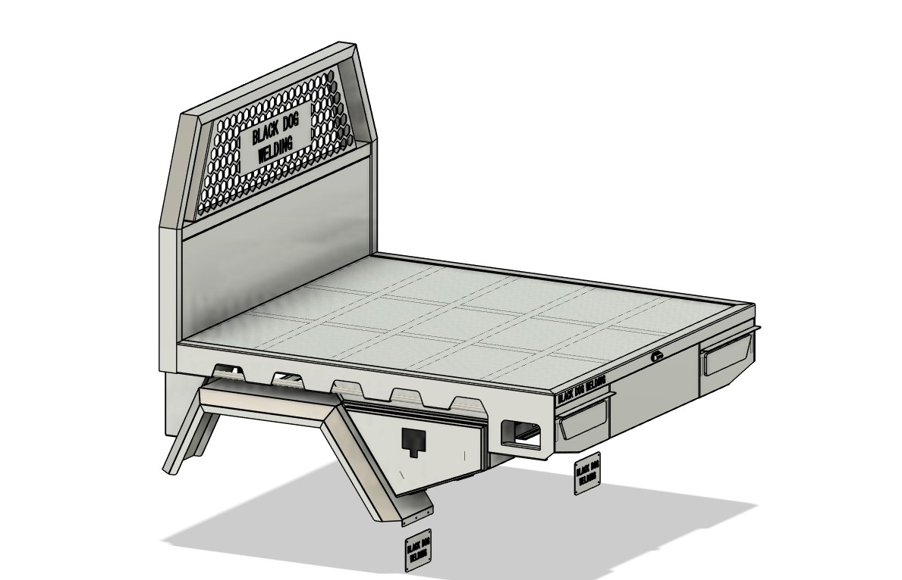
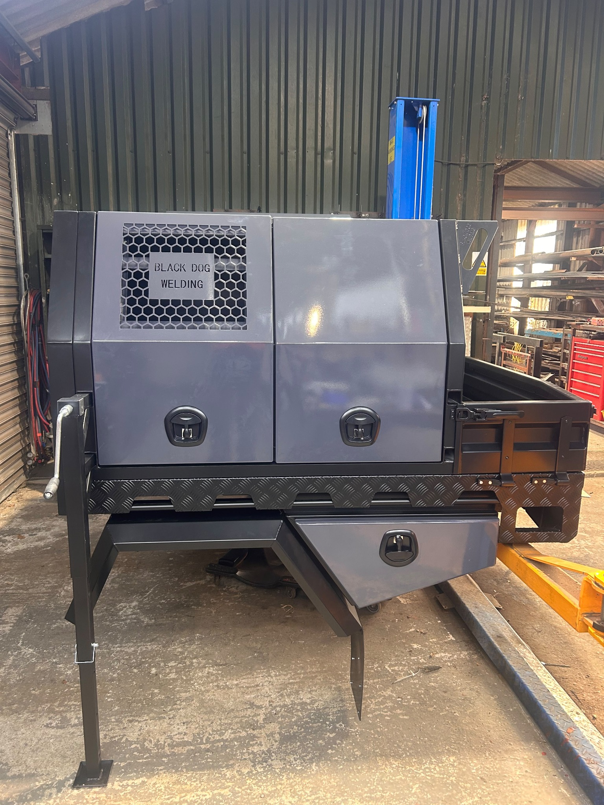
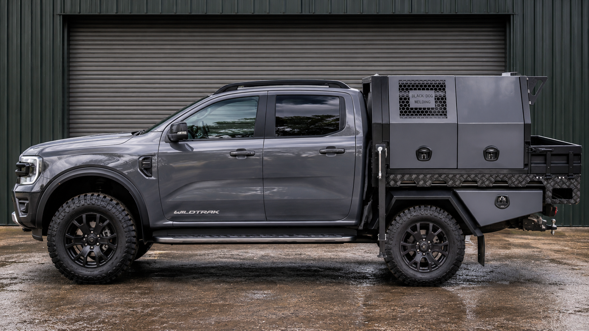

Pickup truck trays
Bespoke pickup flatbed trays with practical load space, headboards and underbody storage options.
Configure your pickup truck trays →Blackdog Welding designs and builds practical pickup truck trays and canopies for working vehicles across the UK. Choose from standard trays, shooting-spec canopies, fencing contractor builds, construction storage and agricultural configurations.
SHOP TRAYS & CANOPIESDISCUSS A BESPOKE BUILDOur pickup conversions are made to order, with configurations for popular 4x4 pickups including Ford Ranger, Toyota Hilux, Toyota Land Cruiser 79 Series, Isuzu D-Max, Mitsubishi L200, Nissan Navara and Volkswagen Amarok. Vehicle fitment, availability and individual specifications are confirmed before manufacture.

Bespoke pickup flatbed trays with practical load space, headboards and underbody storage options.
Configure your pickup truck trays →
Purpose-built shooting-spec tray and canopy systems with lockable access and storage for working and countryside use.
Configure your shooting trays and canopies →
Three-quarter-length canopy with gullwing doors, pull-out drawers, tool storage and removable jacking legs.
Configure your fencing contractor canopies →
Organised site-tool storage with shelving, compartments and sliding drawers.
Configure your construction canopies →Working canopy configurations with ventilated dog boxes, washable floors, farm-tool storage and removable jacking legs.
Configure your agricultural canopies →Depending on your selected build, available options include water tanks, LED work lights, D-ring lashing eyes and bespoke storage boxes. You can choose workshop fitting or request a delivery quotation. Some builds require a confirmed bespoke quotation before payment.
Use our pickup trays and canopies configurator to see advertised prices, available configurations and detailed specifications. The current estimated manufacturing lead time is 3.5 months from order confirmation.
A pickup tray replaces the standard load bed with a practical flatbed-style working platform, with optional storage and accessories depending on the build.
A canopy adds enclosed storage above a pickup tray. Blackdog Welding offers configurations with access doors, drawers, shelving and specialist compartments depending on the specification.
Yes. Our shop page includes a bespoke enquiry form where you can describe exactly what you need and include your vehicle details.
Workshop fitting is available for eligible builds by appointment in the Staplecross / Rye area. UK mainland delivery is available by quotation.
For bespoke trays, shooting canopies and working-vehicle storage, contact Blackdog Welding.
EMAIL BLACKDOGCALL 07375 855024